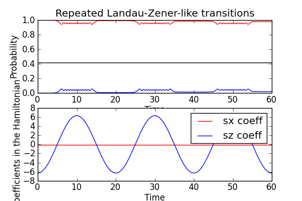

Using the propagator to find the steady state of a driven system¶
In this example we consider a strongly driven two-level system where the driving field couples to the sigma-Z operator. The system is subject to repeated Landau-Zener-like transitions.
In the following code we evolve the system for a few driving periods and plot the results, to get an idea of how the state of the two-level system changes at the avoided-level crossing points (where the Sigma-Z coefficient in the Hamiltonian is zero).
Next, we use the qutip.propagator() function to find the propagator for the system for one driving period, and then we use the qutip.propagator_steadystate() function to find the pseudo steady state density matrix that follows from infinitely many applications of the one-period propagotor.
#
# Repeated Landau-Zener transitions in a quantum two-level system, steadystate
# of the driven system calculated from the evolution propagator.
#
from qutip import *
from pylab import *
import time
def hamiltonian_t(t, args):
""" evaluate the hamiltonian at time t. """
H0 = args[0]
H1 = args[1]
w = args[2]
return H0 + cos(w * t) * H1
def qubit_integrate(delta, eps0, A, omega, gamma1, gamma2, psi0, tlist, option):
# Hamiltonian
sx = sigmax()
sz = sigmaz()
sm = destroy(2)
H0 = - delta/2.0 * sx - eps0/2.0 * sz
H1 = - A/2.0 * sz
H_args = (H0, H1, omega)
# collapse operators
c_op_list = []
n_th = 0.0 # zero temperature
# relaxation
rate = gamma1 * (1 + n_th)
if rate > 0.0:
c_op_list.append(sqrt(rate) * sm)
# excitation
rate = gamma1 * n_th
if rate > 0.0:
c_op_list.append(sqrt(rate) * sm.dag())
# dephasing
rate = gamma2
if rate > 0.0:
c_op_list.append(sqrt(rate) * sz)
# evolve and calculate expectation values
expt_list = odesolve(hamiltonian_t, psi0, tlist, c_op_list, [sm.dag() * sm], H_args)
# find the propagator for one driving period
T = 2*pi / omega
U = propagator(hamiltonian_t, T, c_op_list, H_args)
# find the steady state of successive application of the propagator
rho_ss = propagator_steadystate(U)
return expt_list[0], real(expect(sm.dag() * sm, rho_ss))
#
# set up the calculation: a strongly driven two-level system
# (repeated LZ transitions)
#
delta = 0.05 * 2 * pi # qubit sigma_x coefficient
eps0 = 0.0 * 2 * pi # qubit sigma_z coefficient
A = 2.0 * 2 * pi # sweep rate
gamma1 = 0.0001 # relaxation rate
gamma2 = 0.005 # dephasing rate
psi0 = basis(2,0) # initial state
omega = 0.05 * 2 * pi # driving frequency
T = (2*pi)/omega # driving period
tlist = linspace(0.0, 3 * T, 1500)
# solve for the dynamics for a few driving periods, and find the steady state
start_time = time.time()
p_ex, p_ex_ss = qubit_integrate(delta, eps0, A, omega, gamma1, gamma2, psi0, tlist, "dynamics")
print 'time elapsed = ' + str(time.time() - start_time)
#
# plot the results
#
fig=figure(figsize=[6,4])
subplot(211)
plot(tlist, real(p_ex), 'b', tlist, real(1-p_ex), 'r', tlist, ones(shape(tlist)) * p_ex_ss, 'k')
xlabel('Time')
ylabel('Probability')
title('Repeated Landau-Zener-like transitions')
#legend(("Excited state", "Ground state", "Excited steady state"), loc=0)
subplot(212)
plot(tlist, -delta/2.0 * ones(shape(tlist)), 'r')
plot(tlist, -(eps0/2.0 + A/2.0 * cos(omega * tlist)), 'b')
legend(("sx coeff", "sz coeff"))
xlabel('Time')
ylabel('Coefficients in the Hamiltonian')
savefig('examples-propagator.png')
close(fig)
